ATLAS VALLEY
🚀 Atlas Valley | Powering the Future of Autonomy 🌍🔋
Om Atlas Valley
Välkommen till Atlas Valley - Ledande inom Innovativ Elektronik och Globalt Samarbete
🌟 Välkommen till Atlas Valley 🚀 - Ledande inom Innovativ Elektronik 💡 och Globalt Samarbete 🤝
🌍 Om oss 🌍
Atlas Valley är en branschledande 🏆 icke-vinstdrivande ❤️ organisation som specialiserar sig på avancerad elektronik ⚡, elektroteknik 🛠️ och globalt samarbete 🌏. Vi arbetar dygnet runt 🌙💼 för att bygga en gemenskap 🤗 som omfamnar elektronisk innovation 🤖⚙️ och strävar efter att nå nya höjder 🚀 inom teknisk utveckling och globalt samarbete 🌎.
🎯 Vår Vision 🎯
💡 Vår vision är att stoppa hungern 🍽️❌ i världen, minska miljöföroreningar 🌱🚯 och höja livskvaliteten 📈🏡 till nya nivåer 🚀 genom innovativa lösningar 🧠💡 och expertis från vårt team 👨🔬👩💻. Vi tror på att använda avancerade algoritmer 🤖📊 och näst intill obegränsad beräkningskraft 🔥💻 för att lösa de mest komplexa utmaningarna 🔄🌎 som världen står inför.
🚀 Våra Projekt 🚀
- 🔹 🍏 Matförsörjning för alla 🍞: 💡 Utveckling av avancerade elektroniska system 🛠️⚙️ för att öka livsmedelsproduktionen 🌾🌽 och främja hållbara jordbruksmetoder 🚜🌱.
- 🔹 🌱 Miljövänliga teknologier 🌍: 🧪 Forskning och utveckling av elektroniska apparater 🔋💡 som minskar koldioxidutsläpp 🌿🚗 och främjar en grönare planet 🌎🌳.
- 🔹 💙 Hälsosam livsstil och välbefinnande 🏃♂️🧘♀️: 📡 Användning av avancerad teknik 🤖 för att övervaka 👀 och förbättra 📊 människors hälsa 💓 och välbefinnande 🌟 över hela världen 🌍.
🤝 Hur du kan bidra 🤝
Om du delar vår passion ❤️🔥 för att göra en verklig skillnad i världen 🌎, finns det flera sätt du kan bidra 🎁 till vår verksamhet: ✔️ Bli volontär 🤗 och hjälp oss i våra projekt! ✔️ Ge en donation 💰 för att stödja vårt arbete! ✔️ Bli en samarbetspartner 🤝 för att skapa nya innovativa lösningar 🔬! 📩 Kontakta oss för att lära dig mer om hur du kan vara en del av vårt team 👨💻👩🔬 och vår mission 🚀.
📞 Kontakta oss 📞
För mer information om Atlas Valley och våra projekt, tveka inte att kontakta oss:
- 📧 E-post: ✉️gmail
- 📱 Telefon: 📞 +46 734992799
- 🐦 Följ oss på Twitter: 🐤 Atlas Valley och 💬Telegram📢: @Atlas Valley
🏙️Based in : Stockholm, Sweden. 🇸🇪
🔥 Tillsammans bygger vi en bättre framtid! 🌍🚀
Our Library
.jpg) 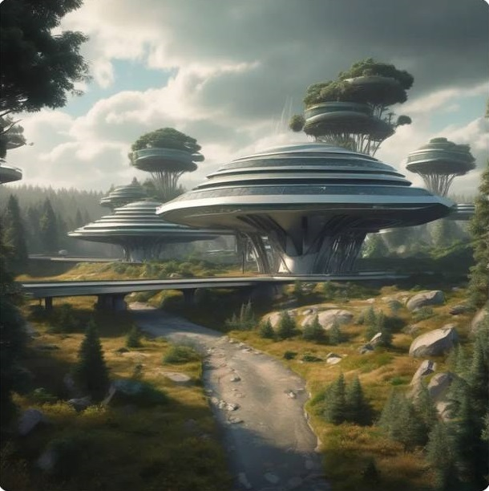
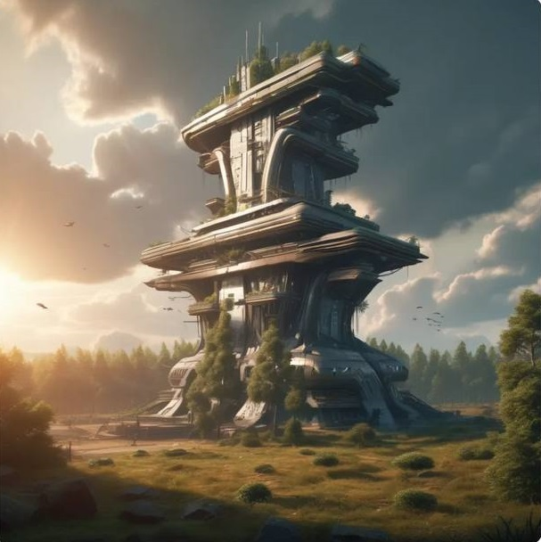
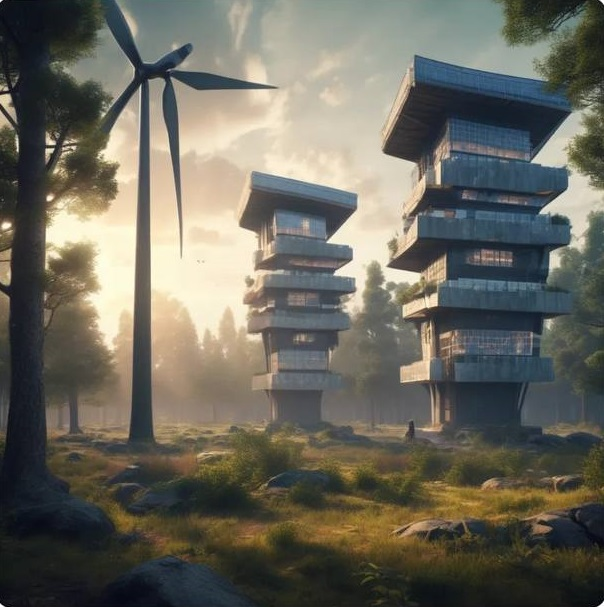
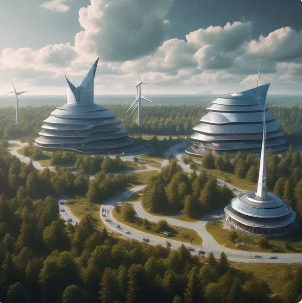
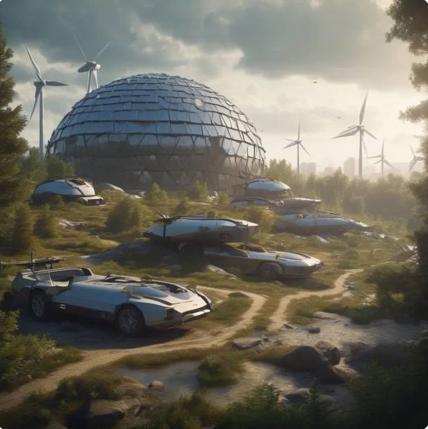
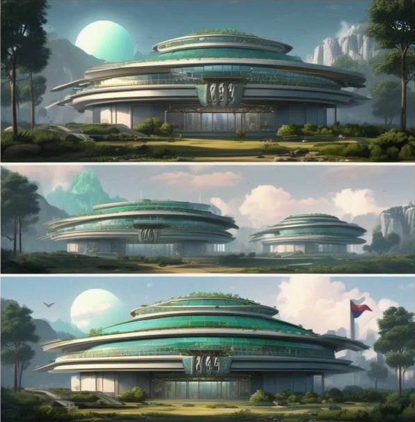
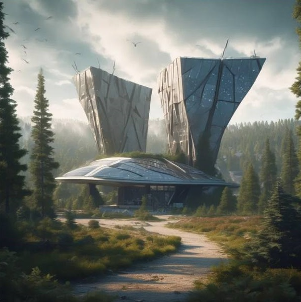
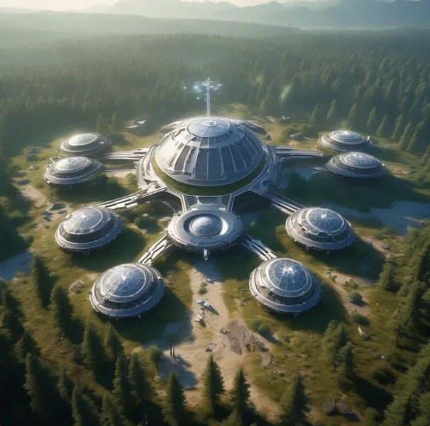
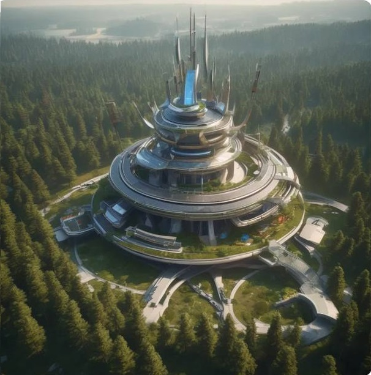
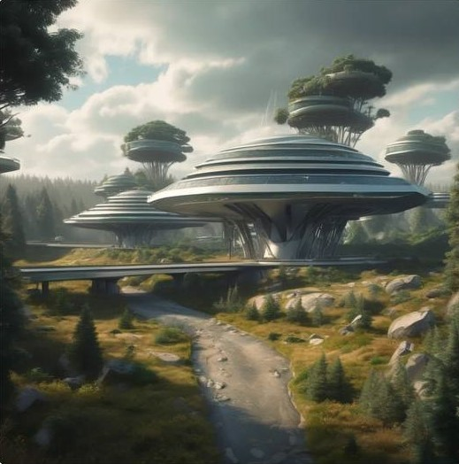
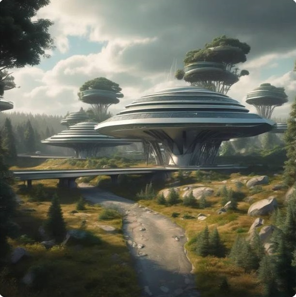
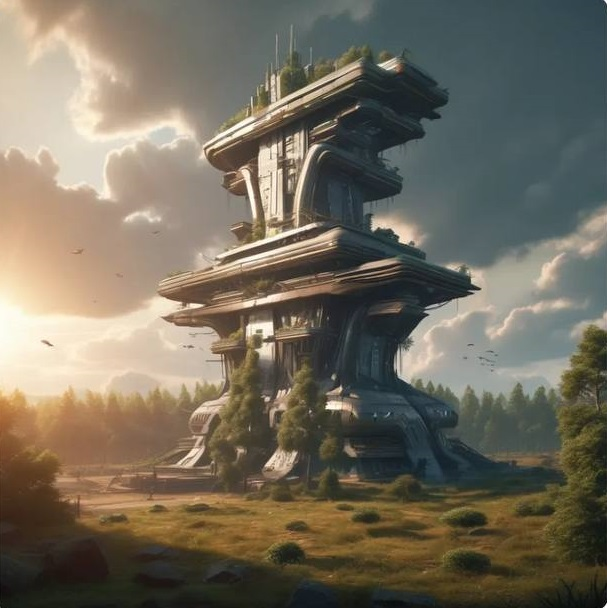
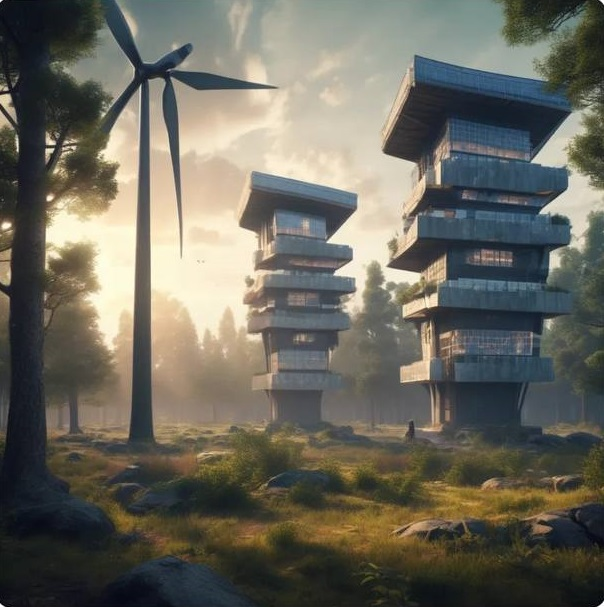
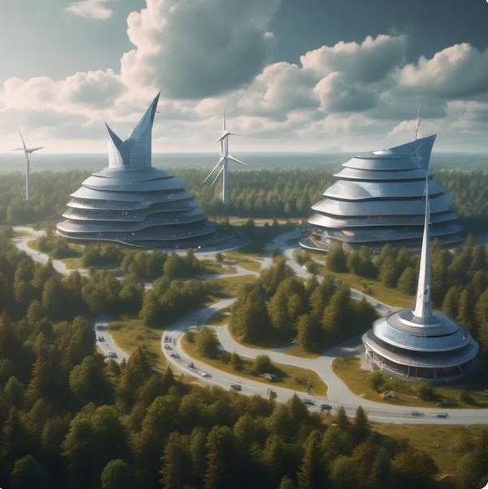
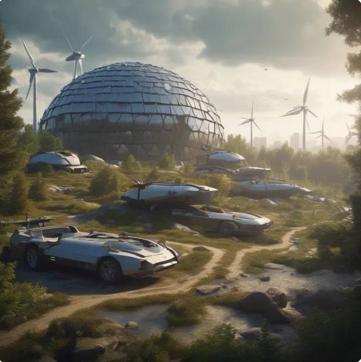
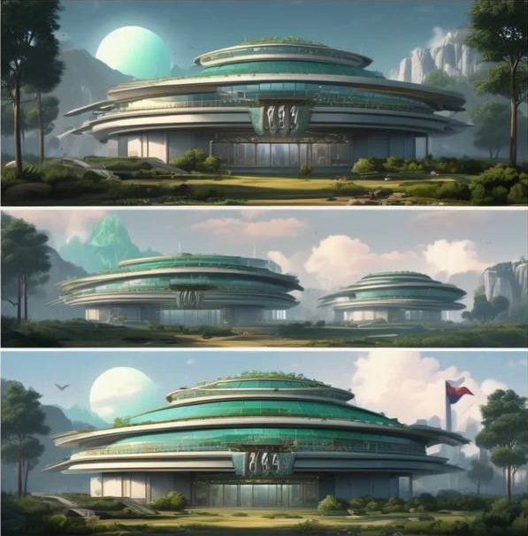
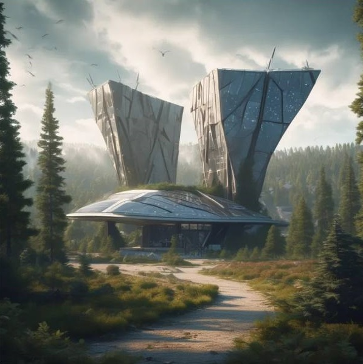
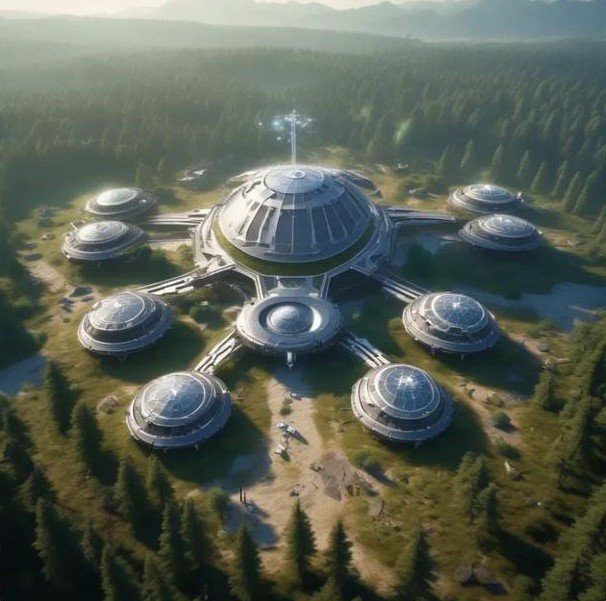
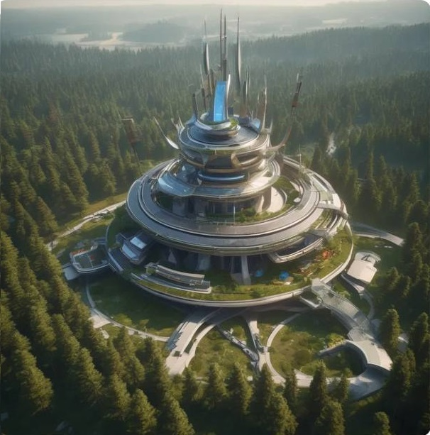
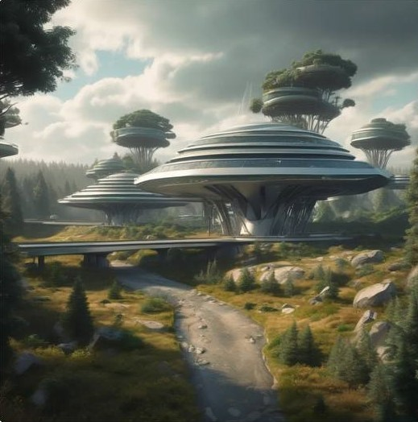
Om organisationen
🛠️ Work History & Development Timeline
Atlas Valley is an ambitious project dedicated to revolutionizing autonomous living 🌍🏡.With bases in Stockholm, Sweden 🇸🇪 and multiple cities in northern Italy 🇮🇹 (Milan, Verona, and beyond), our team is laying the foundations for a fully self-sustaining, AI-driven ecosystem 🤖🔆. 🚀 Key Milestones & Future Goals ✅ Concept & Vision Development (Completed) 🔹 Defined core principles: self-sufficiency, automation, and sustainability. 🔹 Established the Atlas Valley blueprint for modular, scalable bases. ✅ Research & Technology Exploration (Ongoing) 🔹 Developing cutting-edge renewable energy solutions 🔆 (solar, wind, hydrogen). 🔹 AI-driven systems for real-time resource monitoring & automation 🧠. 🔹 Smart water purification & sustainable harvesting technology 💧🌱. 📍 Global Team Expansion (Upcoming) 🔹 Selecting top-tier engineers, designers & AI specialists worldwide 🌎. 🔹 Expanding operations in Spain 🇪🇸, France 🇫🇷, Germany 🇩🇪, Netherlands 🇳🇱, Belgium 🇧🇪, Denmark 🇩🇰, Norway 🇳🇴, Finland 🇫🇮, Morocco 🇲🇦, Albania 🇦🇱, and Turkey 🇹🇷 through strategic collaborations. 📍 Prototype Development & Testing (202X) 🔹 First small-scale Atlas Valley units to be constructed. 🔹 Testing autonomous power, security, and AI-driven systems. 🌟 Global Expansion & Large-Scale Construction (Future) 🔹 Scaling production of Atlas Valley hubs worldwide. 🔹 Establishing partnerships for mass deployment & community integration. This is just the beginning—Atlas Valley is shaping the future! 🚀🔥